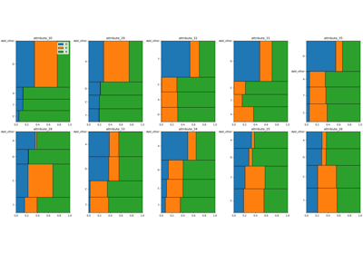
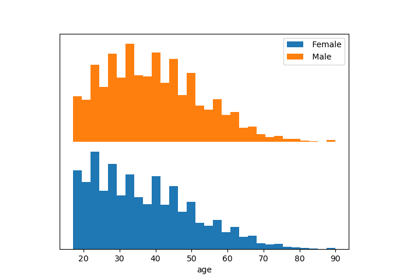
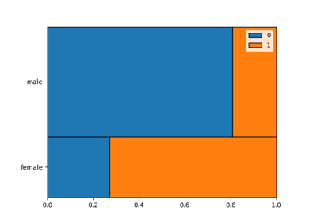
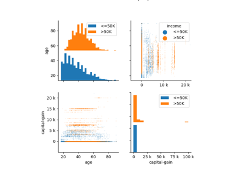
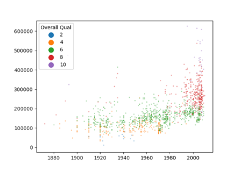
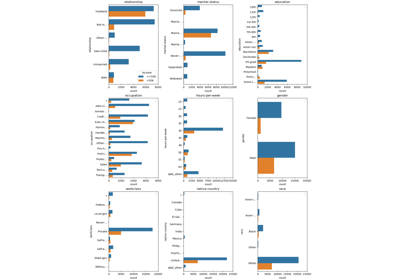

Plotting examples¶


Splice dataset visualization


Class Histogram Example



Mosaic Plot Example

Adult Census Dataset Visualization
Adult Census Dataset Visualization


Discrete Scatter Example

Comparing categorical variable visualizations
Comparing categorical variable visualizations